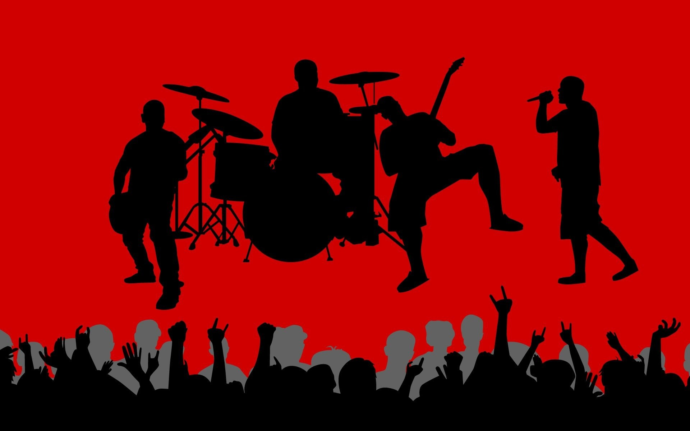
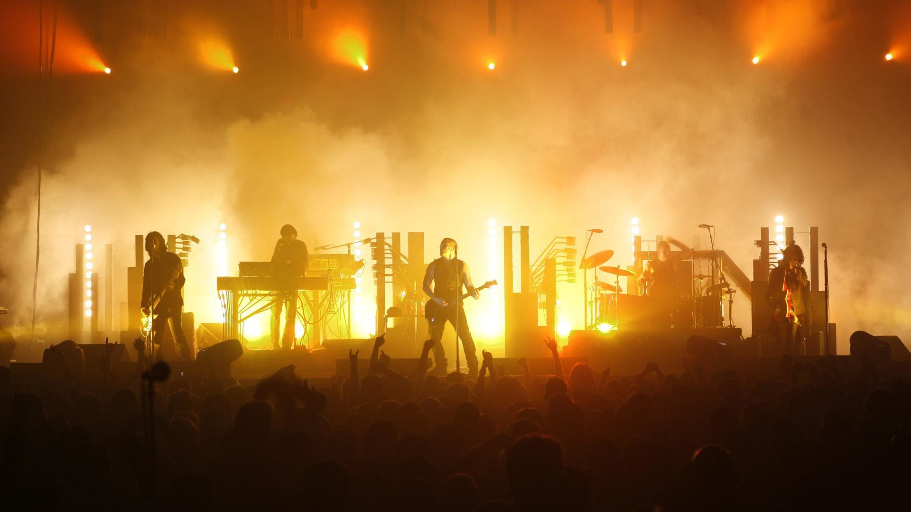

I was always interested in music, I started learning music at a very early age as well. I play several instruments such as guitar, violin, keyboard etc. I joined Amrita in the ear 2016 in the branch of Computer Sciences and Engineering. At the beginning I was completely focus in studies, I studied all the time, but with time, I got to know about the music club of the university: Raga Sudha.
I joined raga sudha in my second year and became one of the lead singers of my band. From there i started perfoming on stage, i performed on many college events and even the fests. later, i joined the local music band in coimbatore and started performing in different cities.

So many amazing and iconic bands were started in someone's garage. Two guitars, a bass, and a set of drums. As The Ramones once sang, “Rock, Rock, Rock ‘N’ Roll High School.” But did you know that some of the greatest groups formed in college? Some wannabe rock and rollers think that college is a waste of time. They feel like they need to hit LA, Nashville, or New York to make the big time. But these college bands are here to stand up and say that there is another way.
Rock and roll, country, rap, and R&B are all represented by places of higher education. College is the perfect place to form your band. You are surrounded by thousands of people from different geographic and socio-economic backgrounds. By being around so many people, you are going to find your group of friends. And among those friends, you are bound to find other musicians. You might meet people that love the same bands you grew up listening to, or you might find some that have tastes that vary wildly from your own. That’s the beauty of it. You never know who you’re going to meet and what they will bring to the table. These bands all came together to make sweet, sweet music that millions have come to love.

Now i perform with my band, the light year, in many different cities. i am happy to see my parents proud of myself pursuing my passion. education is really important, but its even better if it promotes your passion, and amrita gave me the opportunity,